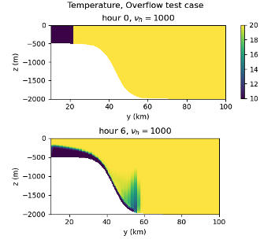

overflow
The ocean/overflow test group induces a density current flowing down a
continental slope and includes four test cases.
The first two are based on Petersen et al. 2015. The domain is periodic on the zonal boundaries and solid on the meridional boundaries. Salinity is constant throughout the domain (at 35 PSU). The initial temperature is bimodal with low temperature throughout the continental shelf region of 10 deg C and high temperature over the slope and deep ocean of 20 deg C. This perturbation initiates slumping of the cold, denser water mass and flow down the slope as a bottom boundary current.
{kind=link}
By default, the sigma coordinate is used. There appears to be an implementation error for other vertical coordinate options. For the default test case, the horizontal resolution is 10 km. For the RPE test case, the horizontal resolution is 2 km.
Test cases three and four have a different setup (mesh and initial conditions)
based on the MITgcm test available at
https://mitgcm.readthedocs.io/en/latest/examples/plume_on_slope/plume_on_slope.html.
The domain is 200m deep and 6.4km across, with an horizontal resolution of 20m and
60 layers in the vertical. The initial temperature is again bimodal with low
temperature throughout the continental shelf region of 10 deg C and high temperature
over the slope and deep ocean of 20 deg C. By default, the z-star coordinate system
is used. The nonhydro test uses the nonhydrostatic formulation and has a run duration
of 30min. The hydro_vs_nonhydro test compares the solutions obtained with the
hydrostatic and nonhydrostatic model after 3h.
All test cases have two steps, initial_state, which defines the mesh and initial
conditions for the model, and forward, which performs time integration of the model.
For the RPE test, there is an additional analysis step which computes the RPE through
time in relation to the initial RPE and visualizes vertical cross-sections
through the center of the domain. For the hydro_vs_nonhydro test, there is an additional
visualization step that plots the temperature profiles obtained with the
hydrostatic and nonhydrostatic model after 3h.
config options
The default and rpe_test test cases share this set of config options:
# Options related to the overflow case
[overflow]
# The width of the domain in the across-slope dimension (km)
width = 40
# The length of the domain in the along-slope dimension (km)
length = 200
# Viscosity values to test for rpe test case
viscosities = 1, 5, 10, 100, 1000
The nonhydro and hydro_vs_nonhydro tests share different config options:
# config options for the horizontal grid
[horizontal_grid]
#Number of cells in the x-direction
nx = 320
#Number of cells in the y-direction
ny = 4
#Distance from two cell centers
dc = 20.0
# Options related to the vertical grid
[vertical_grid]
#Depth of the bottom of the ocean
bottom_depth = 200.0
#Number of vertical levels
vert_levels = 60
# the type of vertical grid
grid_type = uniform
# The type of vertical coordinate (e.g. z-level, z-star)
coord_type = z-star
# Whether to use "partial" or "full", or "None" to not alter the topography
partial_cell_type = None
# config options for the solitary wave testcase
[hydro_vs_nonhydro]
#Lateral position of the shelf-break
xs = 4700.0
#Length-scale of the slope
Ls = 533.3333
#Beta in eos
eos_linear_beta = 0.8
#Reference salinity
eos_linear_Sref = 35.0
#Reference density
eos_linear_densityref = 1000.0
#Density variation per layer
rhoz = -2.0e-4
#Lower temperature
lower_temperature = 10.0
#Higher temperature
higher_temperature = 20.0
# config options for the solitary wave testcase
[visualize]
#Time at which plotting the variables
plotTime = 6
default
ocean/overflow/default is the default version of the
overflow test case for a short (12 min) test run and validation of
prognostic variables for regression testing.
rpe_test
Since mixing is a strong function of horizontal viscosity, this test case
ocean/overflow/rpe_test performs 40-hour integrations of the model forward
in time at 5 different values of the viscosity (with steps named
rpe_test_1_nu_1, rpe_test_2_nu_5, etc.). Results of these tests have
been used to evaluate spurious dissipation in relation to different models and
vertical grid choices
(Petersen et al. 2015).
nonhydro
ocean/overflow/nonhydro uses the nonhydrostatic formulation. After the mesh and
initial conditions are generated, the nonhydrostatic model is run for 30min using
the RK4 time-stepping scheme with a time-step of 0.5s.
hydro_vs_nonhydro
ocean/overflow/hydro_vs_nonhydro compares the solutions obtained with
the hydrostatic and nonhydrostatic model. After the creation of the mesh
and initial conditions, an hydrostatic and a nonhydrostatic simulation
are run using the RK4 time-stepping scheme with a time-step of 0.5s.
The temperature profile at 3h is plotted for the hydrostatic
and nonhydrostatic case. The plot shows that a Kelvin-Helmholtz instability
develops in the nonhydrostatic case, leading to entrainment of
ambient fluid into plumes, whereas the hydrostatic model fails to
capture the correct physics.